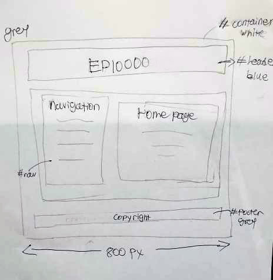
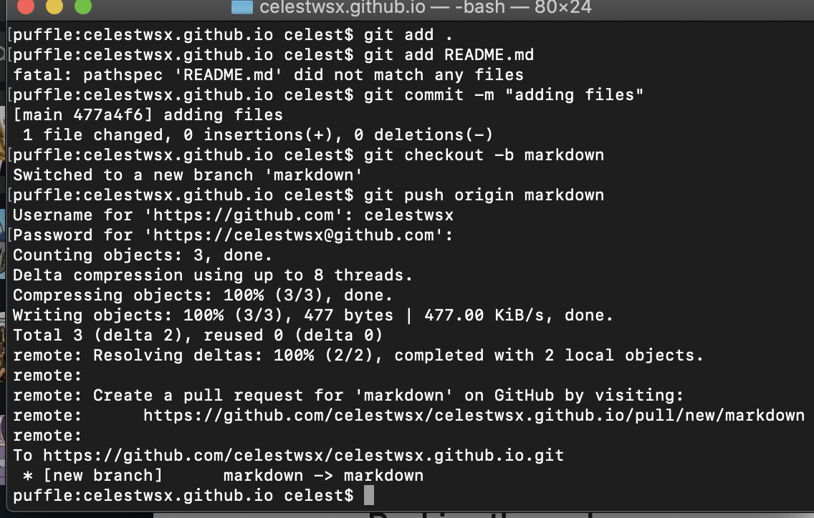

Week 2: How the Website was Created
Firstly, I watched Jake Wright's video.
Next, I sketched out the website. There is 4 parts to the website: the header, navigation, homepage, and copyright. I put a name for each one because it will be easier when I start writing out the CSS. 
After that, I start writing it out on Visual Studio Code because I have it installed in my computer. I have also installed a Git plugin so I can create a version control for the website.
Version Control
Version controls are a category of software tools that help a software team measure the changes to the code over time. It helps to recall any folders that you may have lost by restoring it to a previous version. We can easily set up one that connects to the server computer.
To create a version control system, you first have to install Git. Since I did not want to use a homebrew, I went for an older version of Git that still worked.
First, start by configuring it so that it syncs to your account. On a mac, it is using the terminal in utitlities. The command is git config –global user.name “Name” or git config -global user.email "email@email.com". Once you're done, you can start setting up a respository and commit changes.
If you want to restore to a previous version, you can do -git pull to restore to a previous version because it pulls from the server to your local files.
What I realised from this is that it seems to be quite similar to the Github Desktop application because both allow a push/pull. However, I don't think you can go back to a previous version?
